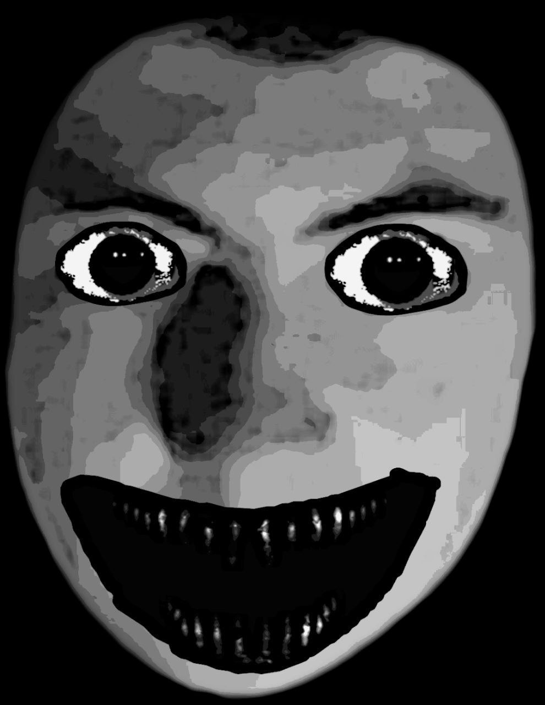

The Dzu Catalogue
"Каталог Дзу" Аналаговый VHS хоррор,действия данного сериала происходят в Аклории, а если конкретнее в округе Бахчи, "Каталог Дзу" воссоздает атмосферу старых аналоговых фильмов ужасов с использованием мрачной палитры цветов, сдержанного звукового оформления и даже деградированных эффектов VHS. Фильм привносит в жанр хоррора нечто особенное и уникальное, погружая зрителей в сюжетную глубину и странный мир Каталога Дзу, где реальность и фантазия сливаются в устрашающей гармонии.В Аклории обитают странные и мрачные существа, называемые "Альтернадзу". Они являются частью необъяснимой и потусторонней сущности, способной принимать облик людей и обманывать их чувства и разум. Целью Альтернадзу является захват разума жертв, чтобы использовать его в своих мрачных целях.
Создатель - Ален Абраамян